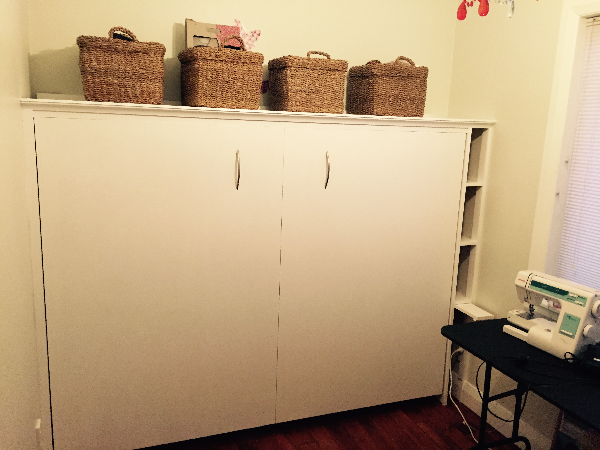

Murphy Bed
I had a few weekends off from my camera project while building a murphy bed cabinet, and and another couple while traveling for work.
Building this murphy bed was a long standing task I finally completed. The bed was constructed from a kit, available here. I also happened to see it just last weekend while in the Rockler store. The one we got was the deluxe kit, for something like $400
I bought this kit around two years ago, in anticipation for visit from my mother-in-law, but circumstances meant I couldn’t finish it. Time went by and then procrastination happened. I am very glad I can now say this is DONE.
The wood was not cheap, something near $970NZD all up. Most of the cost was 4 sheets of marine ply @ $160 each. Our new car performed much better than our last one would have with this wood task.
Building it took every bit of two weekends.
It was too big to assemble in the shed, so I put it together in the lounge.
In addition to the two full weekends, there were also several evenings putting trim up and painting, which my partner was kind enough to do!
